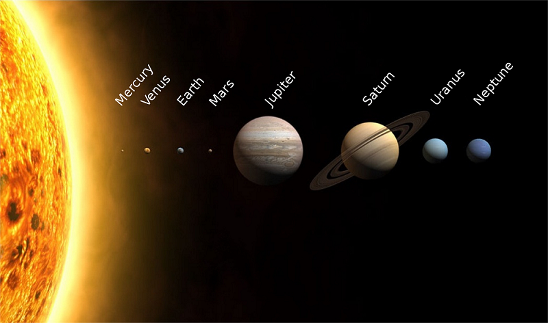

Solar System
The Solar System[a] is the gravitationally bound system of the Sun and the objects that orbit it,
either directly or indirectly,[b] including the eight planets and five dwarf planets as defined by
the International Astronomical Union (IAU). Of the objects that orbit the Sun directly, the largest
eight are the planets,[c] with the remainder being smaller objects, such as dwarf planets and small
Solar System bodies. Of the objects that orbit the Sun indirectly, the moons, two are larger than
the smallest planet, Mercury.[d]The Solar System formed 4.6 billion years ago from the
gravitational collapse of a giant interstellar molecular cloud. The vast majority of the system's
mass is in the Sun, with the majority of the remaining mass contained in Jupiter. The four smaller
inner planets, Mercury, Venus, Earth and Mars, are terrestrial planets, being primarily composed of
rock and metal. The four outer planets are giant planets, being substantially more massive than the
terrestrials. The two largest, Jupiter and Saturn, are gas giants, being composed mainly of
hydrogen and helium; the two outermost planets, Uranus and Neptune, are ice giants, being composed
mostly of substances with relatively high melting points compared with hydrogen and helium, called
volatiles, such as water, ammonia and methane. All eight planets have almost circular orbits that
lie within a nearly flat disc called the ecliptic.
Pick a planet you are interested in!
Mercury
Venus
Earth
Mars
Uranus
Jupiter
Saturn
Neptune

The principal component of the Solar System is the Sun, a G2 main-sequence star that contains 99.86% of
the system's known mass and dominates it gravitationally.[18] The Sun's four largest orbiting bodies,
the giant planets, account for 99% of the remaining mass, with Jupiter and Saturn together comprising
more than 90%. The remaining objects of the Solar System (including the four terrestrial planets, the
dwarf planets, moons, asteroids, and comets) together comprise less than 0.002% of the Solar System's
total mass.[g]
Most large objects in orbit around the Sun lie near the plane of Earth's orbit, known as the ecliptic.
The planets are very close to the ecliptic, whereas comets and Kuiper belt objects are frequently at
significantly greater angles to it.[22][23] All the planets, and most other objects, orbit the Sun in
the same direction that the Sun is rotating (counter-clockwise, as viewed from above Earth's north
pole).[24] There are exceptions, such as Halley's Comet.
The overall structure of the charted regions of the Solar System consists of the Sun, four relatively
small inner planets surrounded by a belt of mostly rocky asteroids, and four giant planets surrounded
by the Kuiper belt of mostly icy objects. Astronomers sometimes informally divide this structure into
separate regions. The inner Solar System includes the four terrestrial planets and the asteroid belt.
The outer Solar System is beyond the asteroids, including the four giant planets.[25] Since the
discovery of the Kuiper belt, the outermost parts of the Solar System are considered a distinct region
consisting of the objects beyond Neptune.[26]
Most of the planets in the Solar System have secondary systems of their own, being orbited by planetary
objects called natural satellites, or moons (two of which, Titan and Ganymede, are larger than the
planet Mercury), and, in the case of the four giant planets, by planetary rings, thin bands of tiny
particles that orbit them in unison. Most of the largest natural satellites are in synchronous
rotation, with one face permanently turned toward their parent.
Distances and scales
The distance from Earth to the Sun is 1 astronomical unit [AU] (150,000,000 km; 93,000,000 mi). For
comparison, the radius of the Sun is 0.0047 AU (700,000 km). Thus, the Sun occupies 0.00001% (10−5 %)
of the volume of a sphere with a radius the size of Earth's orbit, whereas Earth's volume is roughly
one millionth (10−6) that of the Sun. Jupiter, the largest planet, is 5.2 astronomical units
(780,000,000 km) from the Sun and has a radius of 71,000 km (0.00047 AU), whereas the most distant
planet, Neptune, is 30 AU (4.5×109 km) from the Sun.
With a few exceptions, the farther a planet or belt is from the Sun, the larger the distance between
its orbit and the orbit of the next nearer object to the Sun. For example, Venus is approximately 0.33
AU farther out from the Sun than Mercury, whereas Saturn is 4.3 AU out from Jupiter, and Neptune lies
10.5 AU out from Uranus. Attempts have been made to determine a relationship between these orbital
distances (for example, the Titius–Bode law),[37] but no such theory has been accepted. The images at
the beginning of this section show the orbits of the various constituents of the Solar System on
different scales.
Some Solar System models attempt to convey the relative scales involved in the Solar System on human
terms. Some are small in scale (and may be mechanical—called orreries)—whereas others extend across
cities or regional areas.[38] The largest such scale model, the Sweden Solar System, uses the 110-metre
(361 ft) Ericsson Globe in Stockholm as its substitute Sun, and, following the scale, Jupiter is a
7.5-metre (25-foot) sphere at Arlanda International Airport, 40 km (25 mi) away, whereas the farthest
current object, Sedna, is a 10 cm (4 in) sphere in Luleå, 912 km (567 mi) away.[39][40]
If the Sun–Neptune distance is scaled to 100 metres, then the Sun would be about 3 cm in diameter
(roughly two-thirds the diameter of a golf ball), the giant planets would be all smaller than about 3
mm, and Earth's diameter along with that of the other terrestrial planets would be smaller than a flea
(0.3 mm) at this scale.[41]